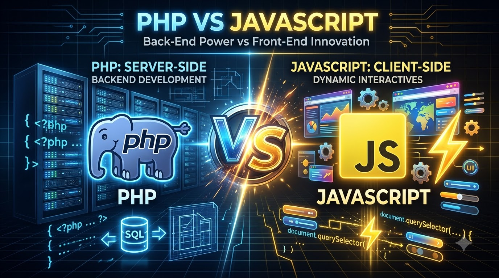

PHP vs JavaScript: diferencias y usos en el desarrollo web
18 de septiembre de 2026 Lenguaje de programacion Desarrollador web PHP JavaScript

Si estás empezando en el desarrollo web, es casi seguro que te has topado con esta pregunta: ¿PHP o JavaScript? La realidad es que no son rivales — cada uno resuelve un problema distinto, y en la mayoría de los proyectos reales terminan trabajando juntos.
¿Qué es PHP?
PHP es un lenguaje de backend: se ejecuta en el servidor, procesa datos, se conecta a bases de datos y genera el HTML que finalmente ve el usuario. Es la base de proyectos como WordPress, y de frameworks como Laravel.
¿Qué es JavaScript?
JavaScript nació como un lenguaje de frontend: corre directamente en el navegador del usuario, permite que una página reaccione a clics, valide formularios, actualice contenido sin recargar, etc. Con la llegada de Node.js, JavaScript también se puede ejecutar en el servidor, lo que lo convirtió en un lenguaje full-stack.
Diferencias clave
- Dónde se ejecutan: PHP tradicionalmente solo en el servidor; JavaScript en el navegador (y opcionalmente también en el servidor con Node.js).
- Tipado: ambos son de tipado dinámico, pero JavaScript tiene variantes con tipado estático como TypeScript.
- Concurrencia: JavaScript (Node.js) usa un modelo asíncrono basado en eventos, ideal para muchas conexiones simultáneas. PHP tradicionalmente procesa cada petición de forma más secuencial (aunque existen herramientas como Swoole para cambiar esto).
- Ecosistema: PHP domina en CMS y sitios tipo WordPress; JavaScript domina en aplicaciones interactivas tipo SPA (React, Vue) y APIs en tiempo real.
¿Cuándo usar cada uno?
Usa PHP cuando:
- Vas a construir un sitio con mucho contenido (blogs, e-commerce, CMS).
- Quieres aprovechar frameworks maduros como Laravel para tener autenticación, rutas y ORM listos rápidamente.
- Necesitas hosting compartido económico (PHP es compatible con casi cualquier hosting básico).
Usa JavaScript cuando:
- Necesitas una interfaz muy interactiva (dashboards, apps tipo Gmail o Trello).
- Quieres usar el mismo lenguaje en frontend y backend (Node.js + React/Vue, por ejemplo).
- Trabajas con actualizaciones en tiempo real (chats, notificaciones push).
La verdad: normalmente usas ambos
En un proyecto típico, el flujo suele verse así:
Navegador (JavaScript) → hace una petición → Servidor (PHP) → responde con datos → JavaScript actualiza la pantalla
Por ejemplo, en Laravel es común usar Blade para renderizar HTML desde PHP, y a la vez usar JavaScript (o Livewire/Vue) para hacer partes de la página más dinámicas sin recargar todo.
Conclusión
No se trata de elegir un “ganador” entre PHP y JavaScript, sino de entender qué rol cumple cada uno. PHP te da una base sólida para el backend y el manejo de datos; JavaScript te da la interactividad que los usuarios esperan hoy en día. Dominar los dos te convierte en un desarrollador mucho más completo.
¿Quieres aprender más?
En próximas entradas hablaremos sobre:
- Buenas prácticas al escribir código PHP.
- Cómo usar Composer: el gestor de dependencias de PHP.